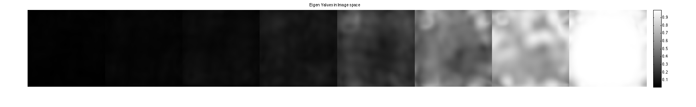

Contents
% SAKE Reconstruction Demo % This a demo on how to use the SAKE method to perform autocalibration with % no autocalibration lines. It is based on P. Shin et. al, "Calibrationless Parallel % Imaging Reconstruction Based on Structured Low-Rank Matrix Completion" % 2013, submitted to MRM. The demo here shows how to recover a calibration % area and then use ESPIRiT to recover the image.
Prepare DATA
load brain_8ch DATA = DATA/max(max(max(abs(ifft2c(DATA))))) + eps; ncalib = 48; ksize = [6,6]; % ESPIRiT kernel-window-size sakeIter = 100; wnthresh = 1.8; % Window-normalized number of singular values to threshold eigThresh_im = 0.9; % threshold of eigenvectors in image space [sx,sy,Nc] = size(DATA); mask = mask_nocalib_x2half; % choose a 3x no calibration mask DATAc = DATA.* repmat(mask,[1,1,size(DATA,3)]); calibc = crop(DATAc,[ncalib,ncalib,8]);
Display sampling mask and root sos of zero-filled reconstruction
im = ifft2c(DATAc);
figure, imshow(cat(2,mask,sos(im)),[]);
title('Left: Sampling mask, Right: root sos of zero-filled reconstruction');
colormap((gray(256))); colorbar;
Singular values of the calibration matrix before SAKE
compute Calibration matrix, perform SVD and convert singular vectors into k-space kernels
[k,S] = dat2Kernel(calibc,ksize);
Display the singular vectors and values of the calibration matrix. There is no distinct null space anymore -- due to the undersampling
kdisp = reshape(k,[ksize(1)*ksize(2)*Nc,ksize(1)*ksize(2)*Nc]); figure, subplot(211), plot([1:ksize(1)*ksize(2)*Nc],S,'LineWidth',2); hold on, plot([wnthresh,wnthresh]*prod(ksize),[0,S(1)],'g--','LineWidth',2) legend('signular vector value','threshold') title('Singular Vectors Before SAKE') subplot(212), imagesc(abs(kdisp)), colormap(gray(256)); xlabel('Singular value #'); title('Singular vectors')
Compute ESPIRiT maps to show that the maps are corrupted as well.
[M,W] = kernelEig(k(:,:,:,1:floor(wnthresh*prod(ksize))),[sx,sy]);
show eigen-values and eigen-vectors. These are corrupted due to the undersampling
figure, imshow3(abs(W),[],[1,Nc]); title('Eigen Values in Image space'); colormap((gray(256))); colorbar; figure, imshow3(abs(M),[],[Nc,Nc]); title('Magnitude of Eigen Vectors'); colormap(gray(256)); colorbar;
Warning: Image is too big to fit on screen; displaying at 67%
Perform SAKE reconstruction to recover the calibration area
disp('Performing SAKE recovery of calibration'); tic;, calib = SAKE(calibc, [ksize], wnthresh,sakeIter, 0);toc disp('Done')
Performing SAKE recovery of calibration Elapsed time is 34.974343 seconds. Done
Singular values of the calibration matrix and ESPIRiT Maps after SAKE
Sake now shows a null space and improved Maps.
[k,S] = dat2Kernel(calib,ksize); [M,W] = kernelEig(k(:,:,:,1:floor(wnthresh*prod(ksize))),[sx,sy]); kdisp = reshape(k,[ksize(1)*ksize(2)*Nc,ksize(1)*ksize(2)*Nc]); figure, subplot(211), plot([1:ksize(1)*ksize(2)*Nc],S,'LineWidth',2); hold on, plot([wnthresh,wnthresh]*prod(ksize),[0,S(1)],'g--','LineWidth',2) legend('signular vector value','threshold') title('Singular Vectors after SAKE') subplot(212), imagesc(abs(kdisp)), colormap(gray(256)); xlabel('Singular value #'); title('Singular vectors') figure, imshow3(abs(W),[],[1,Nc]); title('Eigen Values in Image space After SAKE'); colormap((gray(256))); colorbar; figure, imshow3(abs(M),[],[Nc,Nc]); title('Magnitude of Eigen Vectors After SAKE'); colormap(gray(256)); colorbar;
Warning: Image is too big to fit on screen; displaying at 67%
Compute Soft-SENSE ESPIRiT Maps
crop sensitivity maps according to eigenvalues==1. Note that we have to use 2 sets of maps. Here we weight the 2 maps with the eigen-values
maps = M(:,:,:,end-1:end); % Weight the eigenvectors with soft-senses eigen-values weights = W(:,:,end-1:end) ; weights = (weights - eigThresh_im)./(1-eigThresh_im).* (W(:,:,end-1:end) > eigThresh_im); weights = -cos(pi*weights)/2 + 1/2; % create and ESPIRiT operator ESP = ESPIRiT(maps,weights); nIterCG = 15;
Reconsturctions
ESPIRiT CG reconstruction with soft-sense and 2 sets of maps
disp('Performing ESPIRiT reconstruction from 2 maps') tic; [reskESPIRiT, resESPIRiT] = cgESPIRiT(DATAc,ESP, nIterCG, 0.01,DATAc*0); toc figure, imshow(cat(2,sos(ifft2c(DATA-reskESPIRiT))*10,sos(resESPIRiT.*weights)),[0,1]) title('Left: Reconstruction error x10, Right: SAKE+ESPIRiT reconstruction')
Performing ESPIRiT reconstruction from 2 maps Elapsed time is 3.239150 seconds.